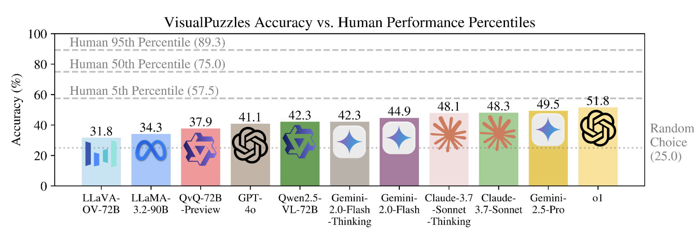
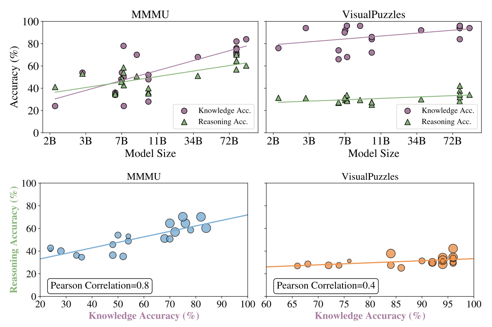
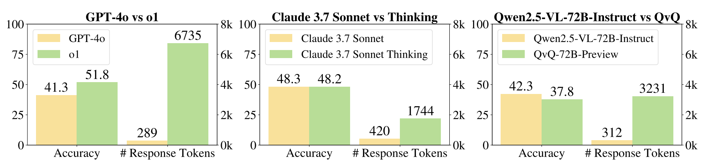
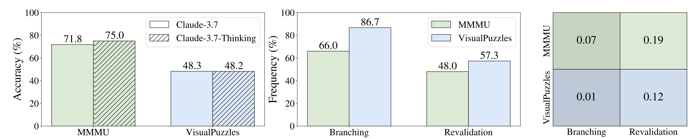
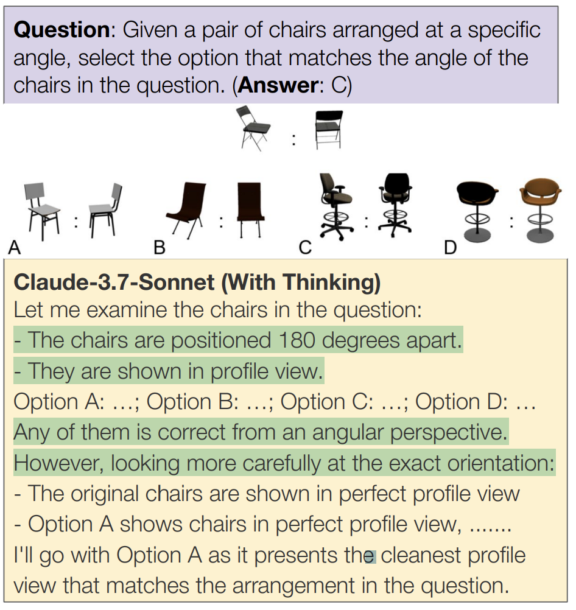
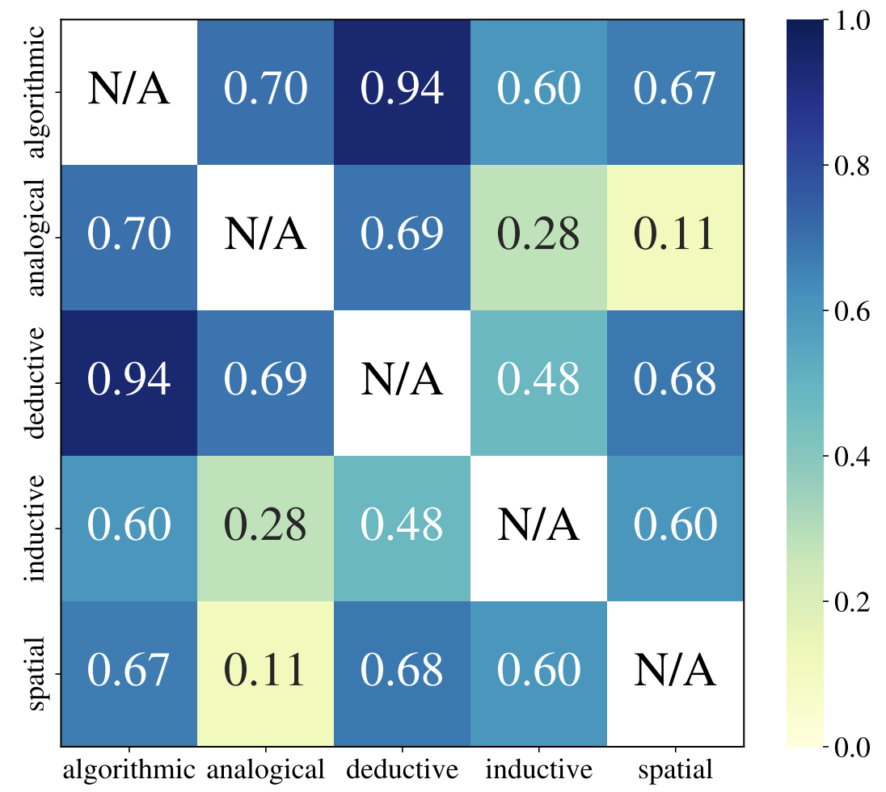
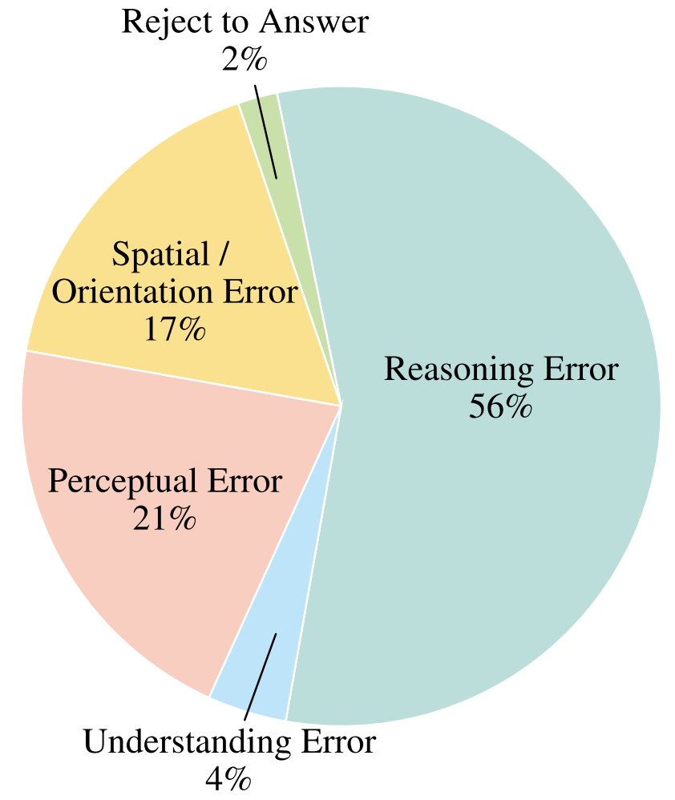

Decoupling Multimodal Reasoning Evaluation from Domain Knowledge
VisualPuzzles: a benchmark that targets visual reasoning while deliberately minimizing reliance on specialized knowledge.
One major source of our questions is manually translated logical reasoning questions from the Chinese Civil Service Examination.Chinese Civil Service Examination (Logic Test), 中国国家公务员考试行测（逻辑推理）
VisualPuzzles consists of 1168 diverse questions spanning five categories: algorithmic, analogical, deductive, inductive, and spatial reasoning.
Each puzzle is labeled as easy, medium, or hard.
Complex Reasoning:
Humans outperform models on easy and medium tasks, while both degrade on harder ones.
No current models surpasses even the 5th-percentile human performance.
Knowledge Light: Experiments show that VisualPuzzles is less knowledge-intensive than existing reasoning benchmarks, and models already possess the knowledge required to solve VisualPuzzles.
Models possessing more knowledge does not strongly correlate better performance on VisualPuzzles.
Corresponding to: {yueqis,gneubig,xyue2}@cs.cmu.edu
Overview

Figure 1: Model accuracy on VisualPuzzles compared to human performance percentiles.
All evaluated models fall below the human 5th percentile (57.5%), highlighting the difficulty of VisualPuzzles.
Interestingly, models with explicit "thinking" modes do not consistently outperform their base versions, suggesting that current reasoning strategies do not yet generalize well to VisualPuzzles's scenarios, even though these strategies have proven effective in existing reasoning tasks that often rely heavily on domain-specific knowledge.
Current multimodal benchmarks often conflate reasoning with domain-specific knowledge, making it difficult to isolate and evaluate general reasoning abilities in non-expert settings.
To address this, we introduce VisualPuzzles, a benchmark that targets visual reasoning while deliberately minimizing reliance on specialized knowledge.
VisualPuzzles consists of diverse questions spanning five categories: algorithmic, analogical, deductive, inductive, and spatial reasoning.
Experiments show that VisualPuzzles requires significantly less intensive domain-specific knowledge and more complex reasoning compared to benchmarks like MMMU, enabling us to better evaluate genuine multimodal reasoning.
Evaluations show that state-of-the-art multimodal large language models consistently lag behind human performance on VisualPuzzles, and that strong performance on knowledge-intensive benchmarks does not necessarily translate to success on reasoning-focused, knowledge-light tasks.
Additionally, reasoning enhancements such as scaling up inference compute (with "thinking" modes) yield inconsistent gains across models and task types, and we observe no clear correlation between model size and performance.
We also found that models exhibit different reasoning and answering patterns on VisualPuzzles compared to benchmarks with heavier emphasis on knowledge. VisualPuzzles offers a clearer lens through which to evaluate reasoning capabilities beyond factual recall and domain knowledge.
Category
Statistics
Total Questions
1168
– Algorithmic Reasoning
262
– Analogical Reasoning
211
– Deductive Reasoning
200
– Inductive Reasoning
209
– Spatial Reasoning
286
Easy / Medium / Hard
46% / 39% / 15%
Option Type (Image / Text)
57% / 43%
AVG. Question Length
154.9
% Easy Words
54%
Table 1: Statistics of VisualPuzzles
VisualPuzzles includes five core reasoning categories:
Algorithmic Reasoning, which involves reasoning over algorithmic rules;
Analogical Reasoning, which requires analyzing the relationships between a pair of entities;
Deductive Reasoning, which involves logically drawing conclusions from known premises;
Inductive Reasoning, which focuses on generalizing rules from observed patterns; and
Spatial Reasoning, which requires interpreting and manipulating spatial relationships.
Each question is also labeled as easy, medium, or hard, based on annotators' estimated cognitive load and time-to-solve metrics.
Experimental Results
Model
Size
Algorithmic
Analogical
Deductive
Inductive
Spatial
Overall
Table 2: Performance of Different Models on VisualPuzzles. The Leaderboard is interactive - for example, click on "size" to sort the table by size of models to see their performances sorted by size.
Disentangling Reasoning from Domain Knowledge
Is VisualPuzzles less knowledge-intensive than existing reasoning benchmarks?
This question is central to our goal of disentangling reasoning ability from domain-specific knowledge.
Many current benchmarks blur this line, making it difficult to assess general reasoning in non-expert settings.
VisualPuzzles was designed to target visual reasoning skills while deliberately minimizing reliance on specialized knowledge.
To test whether VisualPuzzles achieves this goal, we prompted GPT-4o to generate "knowledge concept checklists" for 50 randomly selected questions from a widely-used knowledge-intensive reasoning dataset MMMU and 50 from VISUALPUZZLES.
Each checklist comprises knowledge-specific questions intended to assess whether a model possesses the background information required to solve the original problem. For example, if a question depends on understanding two distinct physics laws, its checklist would include a question to explain each.
The number of checklist items per instance serves as a proxy for knowledge intensivity.
As shown in Table 3, we found that MMMU problems resulted in significantly more checklist items on average (3.9) compared to VISUALPUZZLES (1.1).
This supports the hypothesis that VisualPuzzles is substantially less reliant on domain-knowledge. As a result, performance on VisualPuzzles more directly reflects a model's ability to reason over visual and textual content, offering a clearer signal of progress in multimodal reasoning.
Benchmark
# Knowledge Qs.
MMMU
3.9
VisualPuzzles
1.1
Table 3: Average number of knowledge concept questions generated per instance on MMMU vs. VisualPuzzles.
Do models already possess the knowledge required to solve VisualPuzzles?
To explore this, we measured models' knowledge accuracy-their ability to answer the knowledge checklist questions correctly-on both benchmarks.
This metric reflects how much of the required knowledge is already known by the model, independent of reasoning.
We found a stark contrast: while many models exceed 90% knowledge accuracy on VisualPuzzles, most score below 60% on MMMU, with smaller models frequently dropping under 50%.
Only the largest models approach 80% accuracy on MMMU, underscoring its heavier reliance on domain-specific knowledge.
Does scaling up model size improve performance?

Figure 2: Scatter plots with trend lines of the relationship between accuracy and model size (top) and the relationship between reasoning and knowledge accuracy (bottom) on MMMU and VISUALPUZZLES.
The dots' sizes represent relative model sizes. The correlation between reasoning accuracy and knowledge accuracy is higher on MMMU (0.8) than on VISUALPUZZLES (0.4).
We also plot reasoning accuracy (i.e., overall performance on the benchmark) in Figure 2, revealing some interesting trends:
• MMMU. Larger models tend to have higher knowledge accuracy, and this often translates into higher overall benchmark performance.
This aligns with MMMU's reliance on domain-specific understanding; models with more parameters and training data are
better at recalling relevant factual knowledge, thus improving their overall performance.
• VisualPuzzles. Although many models achieve near-100% knowledge accuracy on VisualPuzzles, we observe no clear increase in both knowledge and reasoning accuracy as model size grows.
In contrast to MMMU, simply scaling number of parameters does not guarantee better performance on VisualPuzzles, implying that further gains on VisualPuzzles must stem from improvements in models' reasoning abilities rather than reliance on extensive knowledge.
What is the relationship between knowledge and reasoning?
Figure 2 also shows two scatter
plots with trend lines that measure how knowledge accuracy correlates with reasoning
accuracy across different open models, where the relative sizes of the dots represent the
sizes of the models. On MMMU (left), there is a strong positive correlation (0.8), suggesting
that a model possessing more knowledge strongly correlates better reasoning performance.
In contrast, VISUALPUZZLES (right) exhibits a more modest correlation (0.4). Although
there is still an upward trend, gains in knowledge accuracy lead to smaller improvements
in reasoning accuracy. This discrepancy implies that while overcoming knowledge gaps
is central to reasoning success on MMMU, VISUALPUZZLES tasks demand more nuanced
inference steps that depends less on domain knowledge.
Do questions in VISUALPUZZLES require more complex reasoning than those in existing benchmarks like MMMU?
Model
MMMU
VisualPuzzles
GPT-4o
75.1%
87.0%
Gemini-2.0-Flash
67.9%
77.3%
Table 4: Percentage of logical reasoning steps in solving benchmark questions.
Besides observing that models generally achieve
lower accuracy on VisualPuzzles compared to
MMMU, we further investigated whether this gap
stems from increased reasoning complexity. To
do so, we measured the proportion of reasoning
steps required to solve each question. We began
by gathering detailed, step-by-step solutions from the models for each question, which are
manually verified for completeness. Then we classified if each step is a logical reasoning
step with the help of LLM. We show the result in Table 4 . On average, logical reasoning steps
take up 14.8% more total steps in solving VisualPuzzles questions compared to those of
MMMU (82.1% v.s. 71.5%). This analysis is based on GPT-4o and Gemini-2.0-Flash across 200
randomly sampled questions per benchmark. These results suggest that VisualPuzzles
demand more extensive reasoning, aligning with its goal of evaluating deeper multimodal
reasoning beyond factual recall.
Do Reasoning Models Perform Better than Their Baselines?

Figure 3: Comparison of accuracy and average number of total completion tokens of
reasoning models and their general counterparts on VisualPuzzles. We didn't include
Gemini-2.0-Flash models here because Gemini-2.0-Flash-Thinking does not reveal the number of reasoning tokens of responses.
The accuracies of Gemini-2.0-Flash and Gemini-2.0-Flash-Thinking is 45.0% and 42.2% respectively. Despite much higher number of completion
tokens, reasoning models do not often achieve better performance on VisualPuzzles.
Recent reasoning models often scale up inference compute by generating longer chains of
thought (CoTs) to enhance reasoning ability. To assess the effectiveness of this strategy on
VisualPuzzles, we compare several reasoning models with their non-reasoning counterparts in Figure 3. The reasoning model o1 outperforms GPT-4o overall. However, structured
"thinking" modes, despite much higher number of completion tokens, show no consistent
benefit.
Are Branching and Revalidation Reasoning Patterns Effective on VisualPuzzles?

Figure 4: Comparison of Reasoning Pattern of Claude-3.7-Sonnet-Thinking on MMMU and
VisualPuzzles. Left figure compares the accuracy of Claude-3.7-Sonnet and Claude-3.7-Sonnet-Thinking on MMMU and VisualPuzzles. Middle figure shows frequency of each
pattern. Right figure shows correlation of the patterns with accuracy on the benchmarks.
To better understand this discrepancy, we examine Claude-3.7-Sonnet-Thinking's reasoning behaviors present in long CoTs, specifcally, branching and re-validation, which are known to play important roles in enhancing reasoning performance.
As shown in Figure 4, our analysis reveals a striking contrast between benchmarks. On
MMMU, both branching and re-validation correlate positively with model accuracy. These
strategies help models explore alternative reasoning paths and revisit earlier steps, aiding
in the retrieval of relevant factual knowledge,an essential component for solving MMMU's
knowledge-intensive questions.
Surprisingly, on VisualPuzzles, these reasoning behaviors are more frequent, yet
less predictive of success. Despite their increased presence in long-form responses,
we observe no significant correlation between these strategies and task accuracy.
This suggests that models may be using
branching and re-validation in ways that
do not meaningfully contribute to solving
the problem.
Figure 5 highlights this with an example
from Claude-3.7-Sonnet-Thinking, where
the model applies branching on a VisualPuzzles puzzle. However, the additional reasoning paths remain shallow
and fail to engage with the core challenge—understanding the spatial arrangement of chairs in the image.

Figure 5: An example of Claude-3.7-Sonnet-Thinking utilizing branching to solve a VisualPuzzles puzzle.
Analysis
Do Models Approach VisualPuzzles Questions Differently?
Benchmark
Answer-First
Option-First
MMMU
29.3%
70.7%
VisualPuzzles (Image Options)
72.5%
27.5%
VisualPuzzles (Text Options)
98.3%
1.7%
Table 5: Answering Strategy
Table 5 shows the statistics of
Claude-3.7-Sonnet-Thinking's
answering strategy. We observe
a clear divergence in answering
strategies between MMMU and
VisualPuzzles. On MMMU, the
model tend to follow an option-driven approach—using the provided choices early to
eliminate unlikely answers and select the most relevant one, often without explicitly
solving the problem. In contrast, models more frequently adopt an answer-first strategy
on VisualPuzzles, attempting to solve the question independently before comparing
the result to the answer choices. This pattern holds across both textual and image-based
options, though the option-first approach appears slightly more often (around 30%) for
image-based tasks-likely due to the added complexity of visual comparison.
Does model performance transfer between reasoning categories?

Figure 6: Correlation Heatmap among reasoning categories for models (averaged across all models we evaluated).
Figure 6 presents a correlation heatmap illustrating the relationships among the five reasoning categories in VISUALPUZZLES. We report
model correlations averaged across all models
in Table 2. For humans, each reasoning category likely engages different cognitive or mental processes , so performance in one category might not
transfer to performance in another. However,
the correlation heatmap of the models tells a
different story. We observe notably strong correlations across reasoning categories, with values
ranging from 0.11 to as high as 0.94. In particular, algorithmic and deductive reasoning show
high correlation (0.94), and other pairs such as
algorithmic-analogical and deductive-analogical
also exhibit strong associations. This suggests
that model performance tends to generalize across categories. However, this generalization
may not reflect true reasoning abilities. Instead, the high correlations could indicate that
models are leveraging shared surface-level patterns or shortcut strategies that happen to
work across multiple structurally different categories, unlike humans, who may rely on
distinct cognitive processes.
Error Analysis

Figure 7: Error Distribution of Claude-3.7-Sonnet-Thinking.
Figure 7 shows a pie chart illustrating the distribution
of error categories of 100 instances generated by Claude3.7-Sonnet-Thinking on VisualPuzzles, revealing that
reasoning errors dominate at 56%, reinforcing the fact that
reasoning is greatest challenge to models in VisualPuzzles. Perceptual errors (21%) and spatial / orientation
errors (17%) also constitute substantial portions of failures, reflecting difficulties in interpreting visual elements
and understanding spatial relationships. These three categories together account for 94% of mistakes, emphasizing
a need for multimodal models with stronger reasoning
capabilities with more robust perception and spatial understanding. Textual and visual understanding errors
(4%) and reject-to-answer cases (2%) are relatively rare.
Conclusion
We presented VisualPuzzles, a novel multimodal benchmark carefully designed to minimize the impact of domain-specific knowledge and isolate models’ core reasoning capabilities. Our results show that while proprietary and large-scale open models achieve relatively
higher performance, they still fall short of human-level reasoning—especially on more
complex tasks such as analogical and inductive reasoning. Moreover, we observe that
strong performance on knowledge-intensive benchmarks like MathVista and MMMU does
not necessarily translate into high accuracy on VisualPuzzles, underscoring the distinct
challenge of knowledge-light reasoning tasks.
These findings suggest that purely scaling model size and knowledge resources may not
suffice for robust multimodal reasoning skills; rather, methods that promote structured
reasoning, such as explicit thinking modes or recursive reasoning steps, can offer substantial
improvements, particularly for hard questions. Future research can explore new training
strategies, specialized architectures, or model interpretations tailored to reduce reliance
on memorized facts and enhance logical inference. Extending VisualPuzzles to include
additional types of multi-image reasoning or temporally dynamic visual information may
further stress-test models' core inference abilities. By disentangling domain knowledge
from multimodal reasoning, we hope VisualPuzzles will serve as a valuable tool for developing and evaluating next-generation MLLMs that excel at genuinely understanding and
reasoning about the world without depending heavily on specialized factual knowledge.
Acknowledgement
This project was supported in part by a grant from DSTA Singapore and the Carnegie Bosch
Institute. The authors would like to thank CMU NeuLab colleagues for their constructive
comments. The authors would also like to thank all volunteers who participated in the
human evaluation.
The authors would like to thank Cambrian team for their project webpage template.
BibTeX
@misc{song2025visualpuzzlesdecouplingmultimodalreasoning,
title={VisualPuzzles: Decoupling Multimodal Reasoning Evaluation from Domain Knowledge},
author={Yueqi Song and Tianyue Ou and Yibo Kong and Zecheng Li and Graham Neubig and Xiang Yue},
year={2025},
eprint={2504.10342},
archivePrefix={arXiv},
primaryClass={cs.CL},
url={https://arxiv.org/abs/2504.10342},
}